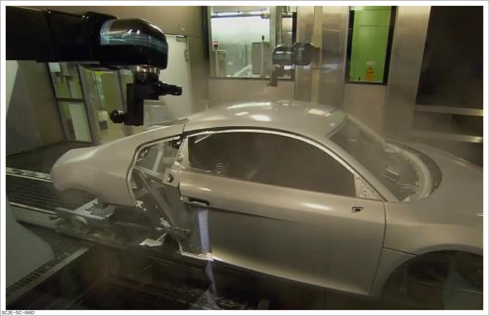
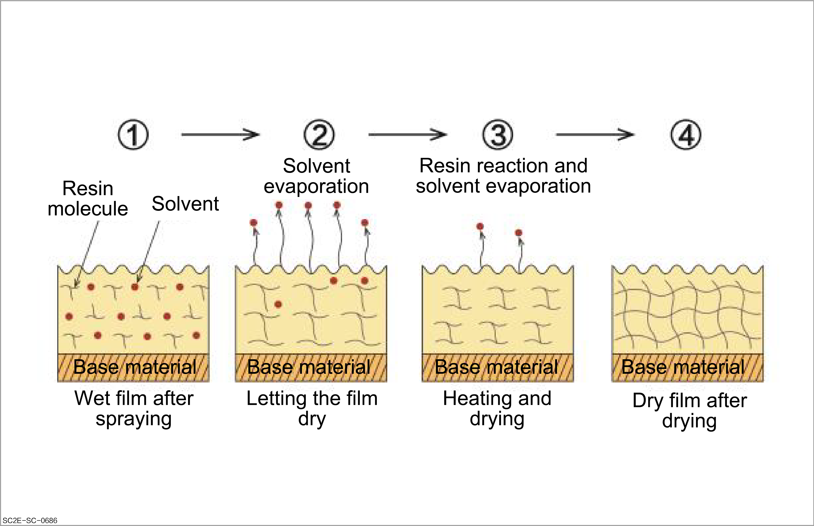
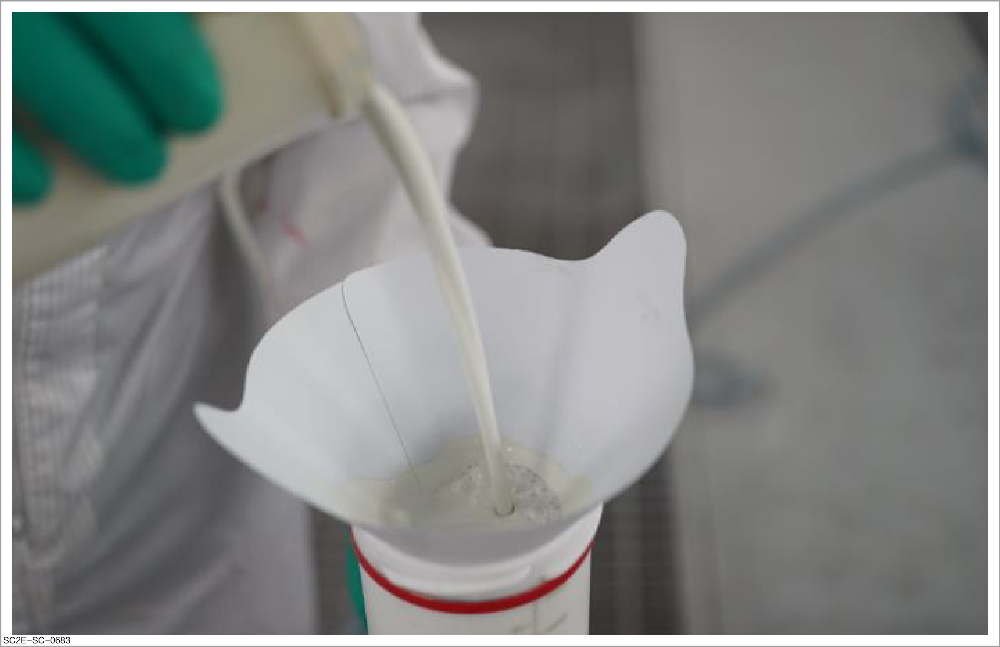
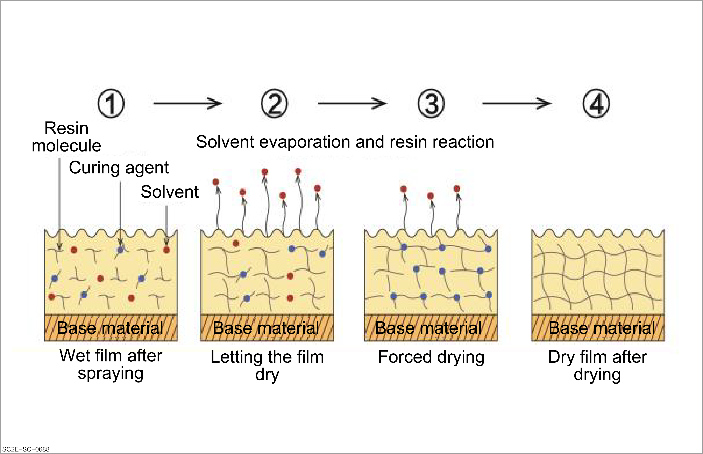
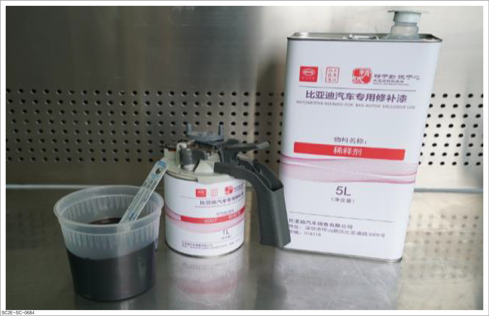
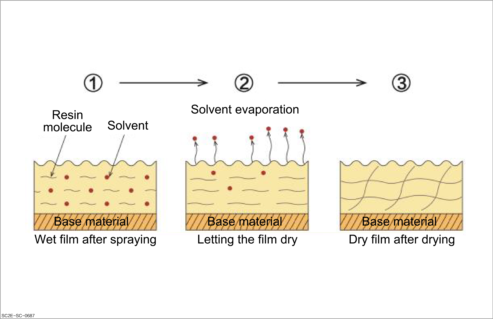
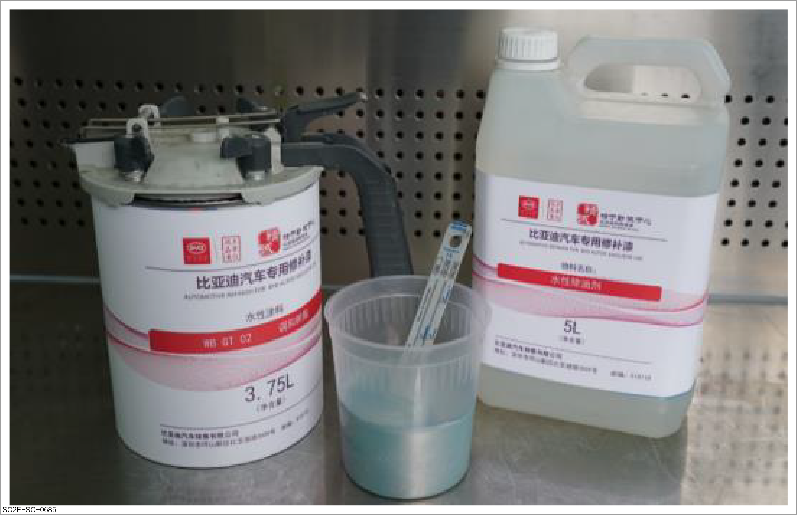

Purpose: It is mainly used for manufacturing new vehicles on the original production line of automobiles.
Process: After the vehicle body is painted, heat it to about 140°C to cure the paint.
Characteristic: During the heating process, a chemical reaction will take place to combine resin molecules to form large particles, thus forming a cured coating on the vehicle body. Even if it encounters solvents, this coating will not be easily dissolved.

Instructions for curing:
When the coating is heated to a certain temperature (generally above 120°C), the resin polymerizes and forms a dense reticular structure.
After being dried, the coating is no longer soluble in organic solvents.

Purpose: It is mainly used for automobile repair and repainting.
Process:
For two-component products, paint must be mixed with a curing agent.
To mix the paints, read the paint product manual carefully, select the matching curing agent or thinner. And mix them according to the standard proportion of the product.
During operation, select painting materials reasonably according to the requirements of the operation process. Improper selection of paint products will lead to painting defects.
Characteristic:
The curing agent and resin components will react chemically to form a coating that does not dissolve easily even when exposed to solvents.
The commonly used paint type is acrylic polyurethane paint.

Instructions for curing:
By mixing paint and curing agent, the resin reacts (polymerizes) to form a reticular structure. This reaction can also take place at normal temperatures and will accelerate when the temperature rises. For the sake of operation efficiency, forced drying operation is usually carried out at 60 °C.
Its reticular structure is as dense as that of thermal polymerization drying, and the paint film performance is excellent (e.g. commonly used polyurethane coatings).
During the operation, it is necessary to mix the curing agent with reference to the proportion instructions carried in the product manual. The two-component paint products shall be used with the matching curing agents; otherwise, poor adhesion, low coating hardness, and poor brightness may occur due to differences in chemical composition ratios.

Purpose: It is mainly used for automobile repair and repainting.
Process:
One-component paint, directly mixed with a thinner before use.
After spraying, the solvent will volatilize and the resin will form a coating.
The panel shall be dried quickly after paint application.
Nitrocellulose paint coatings are easily dissolved by solvents, so care shall be taken to prevent shrinkage when repainting nitrocellulose paint panels.

Instructions for curing: After the solvent in the wet paint film evaporates, a film is formed without resin molecular binding (reticular). Therefore, as long as it is wiped with a thinner, the paint film will dissolve (e.g. nitrocellulose paint and air-dried primer).

Purpose: It is mainly used for automobile repair and repainting.
Ingredient: It is composed of water-based polyurethane resin, pigment, and additives, with water as the solvent.
Characteristic:
Improve the operation environment and operation conditions and eliminate fire hazards during the painting operation. This has a significant effect on reducing pollution and saving resources.
Coating tools can be cleaned with "water" to reduce the consumption of cleaning solvents and effectively reduce harm to the working personnel.
